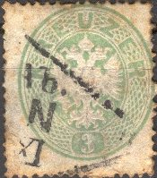
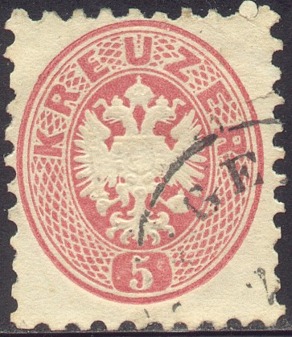

Return To Catalogue - Austria overview - Austria 1850-1862
Note: on my website many of the
pictures can not be seen! They are of course present in the
catalogue;
contact me if you want to purchase the catalogue.
For issues of Austria from 1850 to 1862 click here.




2 k yellow 3 k green 5 k red 10 k blue 15 k brown


(Both perforations of this issue)
For the specialist: These stamps were perforated 14 in 1863, a second print was made in 1863/64 with perforation 9 1/2.
Value of the stamps |
|||
vc = very common c = common * = not so common ** = uncommon |
*** = very uncommon R = rare RR = very rare RRR = extremely rare |
||
| Value | Unused | Used | Remarks |
| Perforated 14 | |||
| 2 k | RR | R | |
| 3 k | RR | R | |
| 5 k | RR | * | |
| 10 k | RR | ** | |
| 15 k | RR | ** | |
Perforated 9 1/2 |
|||
| 2 k | RR | *** | |
| 3 k | RR | *** | |
| 5 k | *** | c | |
| 10 k | R | * | |
| 15 k | R | * | |
Postal stationery in the same design:

Postal stationary exists in the values 3 k green, 5 k red, 10 k
blue, 15 k brown and 25 k lilac. Reprints exist of these
envelopes.
These stamps with value in "SOLDI" were issued for Austrian Italy. Envelopes in the same design exist, I've seen the values 5 k red and 15 k brown.
2 k yellow 3 k green 5 k red 10 k blue 15 k brown 25 k violet Larger size, different design

50 k brown
The small stamps are usually perforated 9 1/2, the 50 k stamp is perforated 12. But other perforations exist. Specialists distinguish between fine prints and coarse prints.
Value of the stamps |
|||
vc = very common c = common * = not so common ** = uncommon |
*** = very uncommon R = rare RR = very rare RRR = extremely rare |
||
| Value | Unused | Used | Remarks |
| 2 k | * | c | |
| 3 k | *** | c | |
| 5 k | * | vc | |
| 10 k | R | vc | |
| 15 k | * | * | |
| 25 k | *** | *** | |
| 50 k | *** | *** | |
A misprint 3 k red (instead of green) exists. 3 stamps off letter and 3 letters are known with this misprint (all used in Hungary). I've only seen one such stamp with a "BRUCKENAU" cancel.
These stamps with values in 'Sld' were issued for the Austrian post offices in Turkey, example:
The apparant imperforated stamps are cuts from envelopes:


A forgery of the 50 k stamp
I've seen a genuine 50 kr stamp with a forged "VADUZ 30/12 79" cancel.
2 k brown 3 k green 5 k red 10 k blue 20 k grey 50 k lilac
Usually these stamps are perforated 9 1/2. Some other rare perforations exist
Value of the stamps |
|||
vc = very common c = common * = not so common ** = uncommon |
*** = very uncommon R = rare RR = very rare RRR = extremely rare |
||
| Value | Unused | Used | Remarks |
| 2 k | * | vc | |
| 3 k | * | vc | |
| 5 k | * | vc | |
| 10 k | * | vc | |
| 20 k | * | c | |
| 50 k | RR | R | |
These stamps with values in "Sld" and/or overprinted with "PARA" were issued for the Austrian post offices in Turkey, example:
Postcard in the same design:

(2 k cut from postcard)
Cut from a pneumatic postcard 'KARTEN-BRIEF zur pneumatischen Expressbeforderung', 15 k:

I have seen a 'Sprechkarte' of the 'K.K.Post- und Telegraphen-Anstalt' with an impression as in the above stamps, but without the inscription 'Kais. Konigl. Oesterr. Post' and 'Ein fl.' in the value inscription.
For later issues of Austria click here.


{kind=link}
{kind=link}
{kind=link}
{kind=link}
{kind=link}